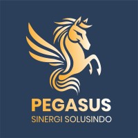
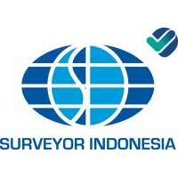
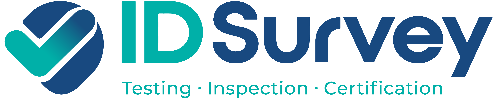

Simak pengalaman dan dampak pelatihan Bahasa Mandarin profesional yang dirasakan oleh berbagai tim, eksekutif, dan profesional korporat.
Telah Bekerja Sama Dengan



Klien Korporat
Retensi Pelatihan Kerjasama
Kepuasan Manajemen
Kurikulum Disesuaikan (Custom)
"Program Corporate Training dari Xuehan Academy sangat membantu tim operasional kami dalam berkomunikasi dengan ekspatriat dan mitra bisnis Tiongkok. Materi disesuaikan langsung dengan terminologi industri kami."
PT Pegasus • Corporate Class
"Pembelajaran Business Mandarin yang terstruktur memudahkan staf teknis kami memahami inspeksi serta laporan standar internasional. Pengajar sangat profesional dan fleksibel dengan jadwal kerja perusahaan."
PT Surveyor Indonesia • Business Mandarin
"Sebagai bagian dari Holding BUMN Jasa Survei, kemampuan bahasa Mandarin sangat krusial dalam proyek-proyek lintas negara. Xuehan Academy memberikan pelatihan intensif dengan progres yang terukur."
"Materi Legal Mandarin yang diajarkan sangat presisi untuk kebutuhan negosiasi kontrak dan penanganan dokumen hukum. Sangat direkomendasikan untuk firma hukum yang menangani klien-klien Tiongkok."
Topwe Lawfirm • Legal Mandarin Program
Dengarkan pengalaman langsung dari profesional yang telah meningkatkan karier mereka bersama Xuehan Academy.
"Seru banget belajar di Xuehan Academy😍 bareng laoshi yang super duper humble dengan jelasin materinya mudah dipahami dan kelas yang interaktif. Sebagai first timer di kelas beginner, aku ngerasa terbantu sekali buat bisa belajar Mandarin dengan waktu yang fleksibel"
Beginner Level Xuehan Student
"Belajar mandarin kini menjadi kebutuhan penting dan Xuehan Academy menawarkan metode pembelajaran yang interaktif serta menyenangkan. Bagi yang memiliki jadwal kerja padat, fleksibilitas kelas di luar jam kerja sangat membantu. Semoga Xuehan Academy semakin sukses dan terus berkembang untuk mengajar bahasa mandarin"
Beginner Level Student
Kelas grup kemarin seru laoshi karena belajarnya santai jadi gak bikin pusing sama sekali masterinya gampang dipahami cara Sebti Laoshi ngajar juga enak dimengerti selalu mastiin kalo kita udah paham yang laoshi sampaiin. Selama belajar bahasa mandarin di Xuehan Academy, saya sangat terpesona dengan kurikulum yang disusun secara komprehensif, khususnya dalam membedah materi HSK 1 secara mendalam. laoshi-laoshi di Xuehan juga menunjukkan dedikasi yang tinggi melalui metode pengajaran yang efisien di komunikatif, selain itu, fleksibilitas dan keuntungan industrialil di luar jaringan memberi pemberian tugas rutin sangat membantu saya dalam melakukan revew materi secara efektif dan terukur"
Kelas Beginner 1
Mulai konsultasi program Corporate Training yang dirancang khusus sesuai industri perusahaan Anda.
Daftar Kelas Sekarang